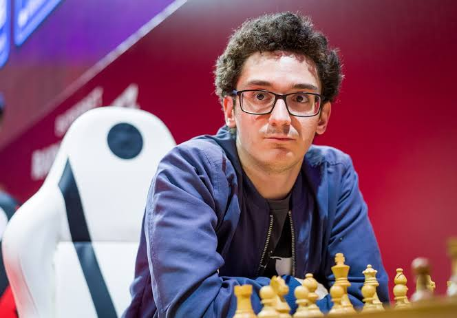
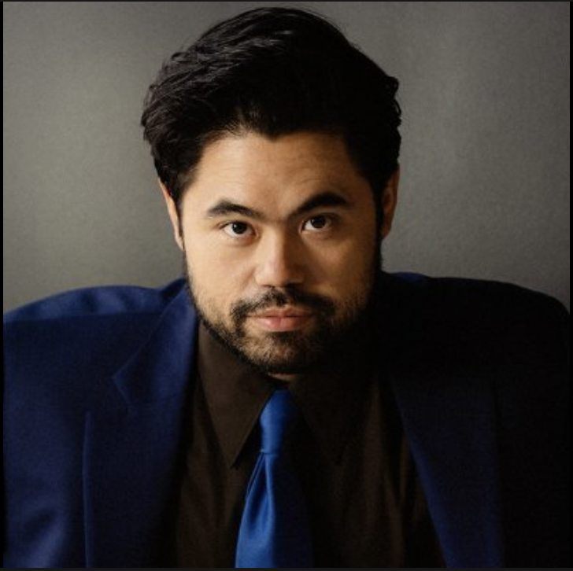

1
Magnus Carlsen
Magnus Carlsen is a Norwegian chess grandmaster. He is a five-time World Chess Champion, the reigning five-time World Rapid Chess Champion, the reigning seven-time World Blitz Chess Champion, and the reigning Chess World Cup Champion.

Learn more
2
Fabiano Caruana
Fabiano Luigi Caruana is an Italian and American chess grandmaster who is the reigning three-time United States Chess Champion. With a peak rating of 2844, Caruana is the second-highest-rated player in history. Born in Miami to Italian parents, Caruana grew up in Brooklyn

Learn more
3
Hikaru Nakamura
Christopher Hikaru Nakamura is an American chess grandmaster, streamer, YouTuber, five-time U.S. Chess Champion, and the reigning World Fischer Random Chess Champion. A chess prodigy, he earned his grandmaster title at the age of 15, the youngest American at the time to do so..

Learn more